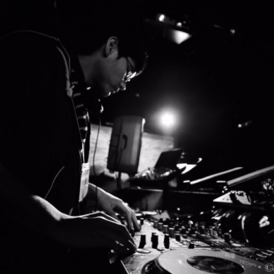

DJ

DJ / Organizer
がーべ
主催。今回はハードダンスやシュランツの気分。
流行りのゲーム音楽も適宜流したい所存。

DJ (クロビナイト / Headphone Jack / Bunkasai)
Yah
音ゲーやフラッシュからTrance, Houseの世界へ。
現在は都内にてProgressive Houseを軸にDJとして活動中。
Padの主張が強い曲が流れると思います。
DJ
5ETSU
会津でEDMを中心にHIPHOPやレゲエもやったりしてます。
久方ぶりに参加させて頂きます。よろしくお願いします。

DJ
SYAVA
音楽ゲーム中心から体を動かしたくなる曲をお届けします。温まりたい。
DJ
Kumampet
今回もハード系で新年早々推して参りたいと思います。
VJ

VJ
Chiffon
アイ○スといいポ○モンといい、公式がハードコア解禁してるの普通にやばい。
令和のガバキック気持ち良すぎだろ！
とどのつまり、ハードでカワイイな曲が聴ける快音が最高ってワケ